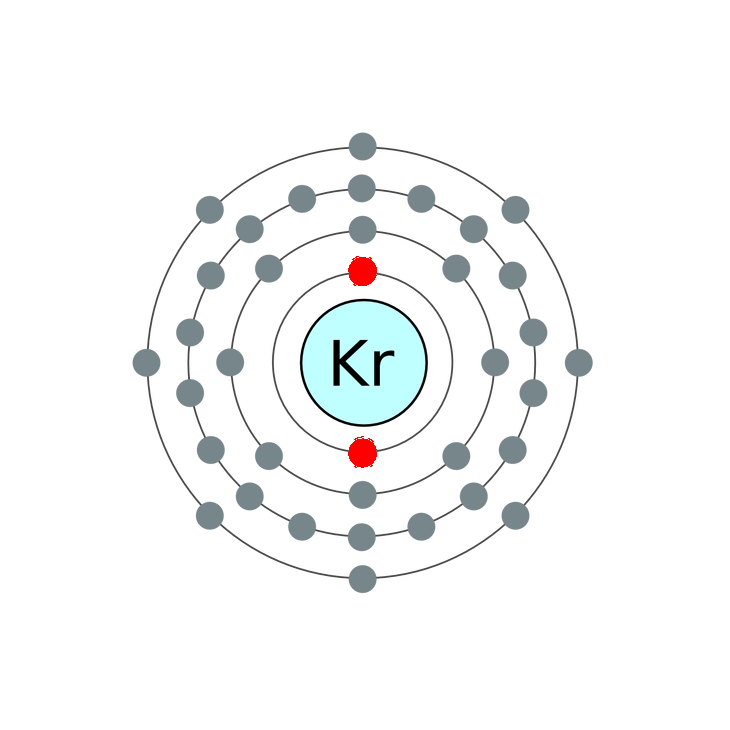

Krypton's multiple emission lines make ionized krypton gas discharges appear whitish, which in turn makes krypton-based bulbs useful in photography as a white light source. Krypton is used in some photographic flashes for high speed photography. Krypton gas is also combined with mercury to make luminous signs that glow with a bright greenish-blue light.
The most inner shell of krypton contains two electrons.